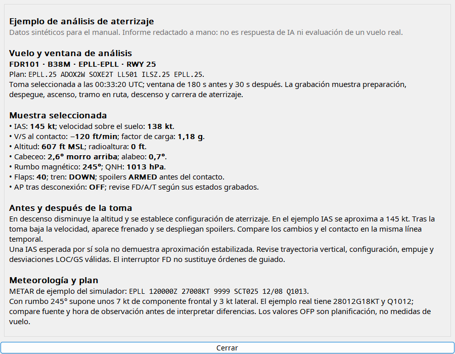
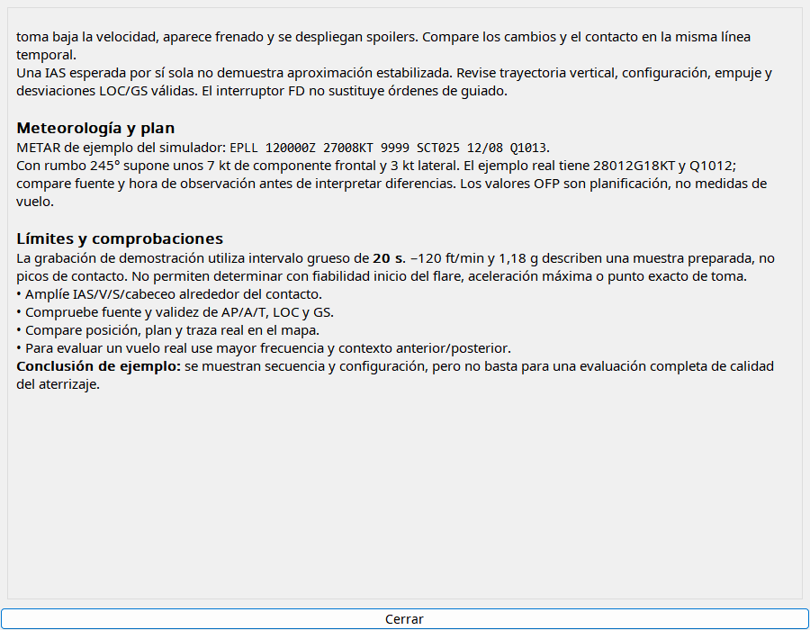

Elija primero el contacto correcto, especialmente tras touch-and-go. Revise cobertura, meteorología y plan. La instrucción pide idioma de aplicación y separar plan/medida. Los informes se guardan; abrir no genera respuesta nueva. Shift con análisis solicita otro informe. Verifique conclusiones en gráficos.
Seleccione evento, configure proveedor y solicite análisis. Asistencia formativa de simulador, puede equivocarse.
| Opción / acción | Funcionamiento y limitaciones |
|---|---|
| Ventanas | Despegue 60/30 s y aterrizaje 180/30 antes/después por defecto; cada campo 1–300 s dentro de los datos. |
| Entrada | Telemetría y plan/FMC/tiempo disponibles; plan separado de medición, no inventa parámetros. |
| Idioma | Prompt solicita idioma de aplicación con identificadores aeronáuticos intactos; modelo puede incumplir. |
| Proveedor | Codex CLI/Gemini/Ollama autenticados/configurados aparte; contexto y timeout limitan solicitud. |
| Informe | Markdown nativo guardado con evento por el flujo de análisis; abrirlo no exige nueva respuesta. |
| Interpretación | Revise la serie: muestreo puede perder pico de impacto; liftoff no es inicio de rotación, IAS estable no es automáticamente VREF. |

